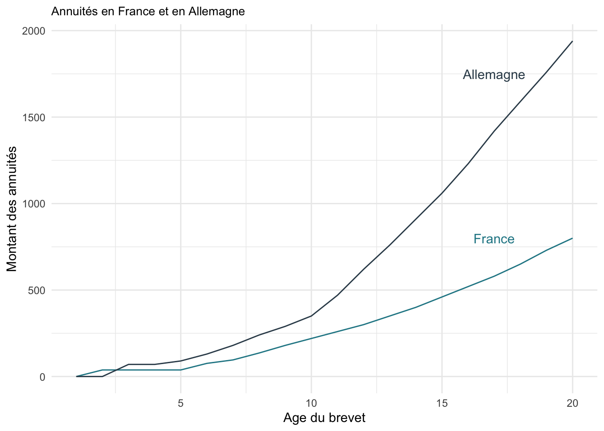
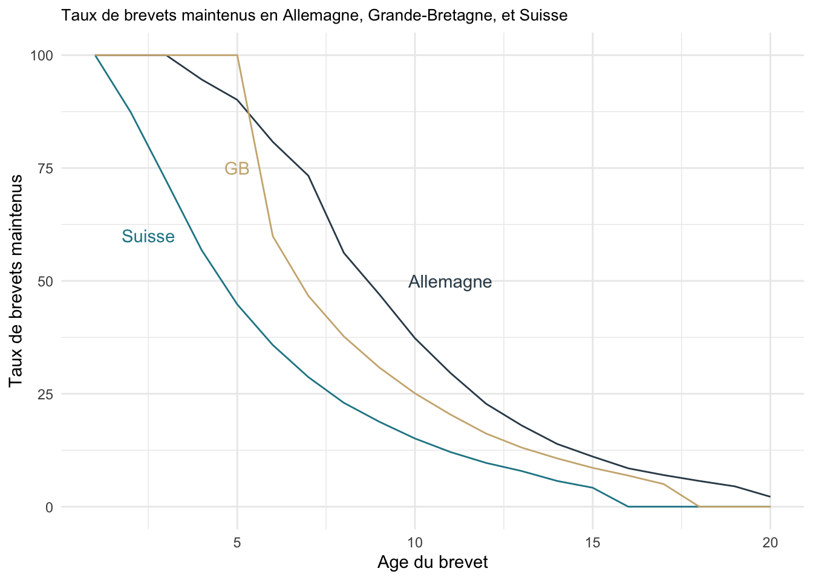

Chapter 2 Mieux comprendre les brevets
Dans cette partie, nous allons nous intéresser à la valeur des brevets, plus précisément à leur valeur économique et stratégique. On commencera par s’intéresser aux déterminants de la décision de breveter, cette décision dépend notamment des obligations légales et de la valeur des brevets. Justement, la partie suivante nous présentera quelques méthodes utilisées par les entreprises pour évaluer leurs brevets en termes monétaires. On terminera par parler des rôles potentiels des brevets.
2.1 Breveter ou pas
Un inventeur est toujours confronté à un arbitrage entre breveter son invention ou la garder secrète. Le choix qui sera fait dépendra de plusieurs éléments :
la taille et le secteur d’activité de l’entreprise,
le degré d’innovation du produit c’est-à-dire si il correspond à une simple amélioration ou à une innovation radicale,
la typologie de l’invention (produit ou procédé),
son influence sur le marché,
son origine dans l’entreprise…
Plus basiquement, l’inventeur va comparer ses gains et ses coûts et choisir la stratégie la plus avantageuse. Les coûts à prendre en compte sont, entre autres, d’ordre administratif et financier.
2.1.1 Les coûts administratifs
Les formalités relatives à une demande de brevet regroupent l’ensemble des tâches administratives dont la réalisation est nécessaire pour déposer un brevet. La procédure de dépôt de brevet comprend 4 étapes : dépôt du dossier (36€ pour dix revendications ou moins), examen du dossier et réponse (520€), publication du brevet, délivrance du brevet (90€). Éventuellement, si le nombre de revendications excède 10 alors chaque demande supplémentaire aura un coût de 42€.
Il est très important de noter que lorsque l’on souhaite déposer une invention dans un pays particulier, il convient de s’adresser à l’organisme compétent dans ce même pays. Si on souhaite protéger son invention dans plusieurs pays, alors il faut s’adresser à chaque organisme national de manière indépendante. Le fait de devoir déposer plusieurs demandes a un effet dissuasif du fait d’importants frais administratifs (entre autres des frais juridiques et de traduction). Ceci étant dit, à l’échelle européenne, il est possible de breveter une invention dans plusieurs pays avec une seule demande. Dans ce cas, il faut s’adresser à l’Office Européen des Brevets (OEB). Cependant, il existe des limites à ces procédures européennes. En effet, la réglementation impose la traduction du descriptif de l’invention dans toutes les langues des pays concernés par ce dépôt international de brevet. Evidemment, cela entraîne des coûts de traduction énormes qui sont très dissuasifs pour le demandeur de brevet. Volontairement ou involontairement, ce sont uniquement les innovations très importantes (i.e. générant d’importants bénéfices) qui sont brevetées par l’OEB.
2.1.2 Les coûts financiers
Les systèmes de protection des inventions impliquent tous la redevance de frais relatifs au maintien du droit de propriété industriel. En général, ces frais sont dûs chaque année et sont appelés “annuités” (taxe progressive pour le maintien du brevet). Pour cela, il sera nécessaire de régulariser tous les ans auprès de l’institut cette taxe qui vaut 38€ la première année et 790€ la \(20^{ème}\) année.

Les frais de renouvellement sont généralement croissants ce qui influence négativement la durée de vie des brevets. P.J. Federico dans son article intitulé Renewal Fees and Other Patent Fees in Foreign Countries3 paru en 1958 J. (1958) , utilisait déjà l’expression “cutting out the dead wood.” Le nombre de brevets maintenus est donc décroissant avec l’âge et avec les frais de renouvellement. On observe que la plus grande partie des brevets abandonnés le sont au cours des dix premières années de la vie d’un brevet.
La décision de breveter doit donc être fonction des coûts liés au dépôt et au maintien du brevet et de la valeur du brevet. Nous allons donc nous pencher sur quelques méthodes utilisées par les entreprises pour évaluer la valeur de leur portefeuille de brevets.
2.2 Approche financière
De nombreux travaux sont le fruit des recherches d’économistes qui ont eu besoin d’évaluer la valeur d’un brevet pour leurs recherches en mettant en exergue des variables fortement corrélés avec la valeur d’un brevet. Ici, il s’agit de méthodes d’évaluations utilisées par les praticiens.
Méthodes d’évaluation des droits de la propriété intellectuelle
Les méthodes d’évaluation de la valeur des droits de la propriété intellectuelle sont de trois types : les évaluations fondées sur les coûts, sur les prévisions de revenus et sur la valeur du marché.
Evaluation fondée sur les coûts
Cette méthode d’évaluation correspond plus à une approche comptable que financière. La méthode la plus utilisée est celle des coûts historiques. Cette méthode va supposer que la valeur d’un brevet n’est rien d’autre que les dépenses engagées pour le mettre au point, à savoir : les coûts en recherche et développement, les coûts de matériels, les frais financiers, les frais administratifs, les coûts liés aux dépôts,… . Elle est la méthode la plus habituellement utilisée à des fins comptables.
Cette méthode est souvent considérée comme une méthode simple du fait de la simplicité d’accès aux informations qu’elle utilise et la plus objective dans la mesure où elle est basée sur des données financières connues. Cependant, une des limites de cette méthode est l’absence de corrélation entre les dépenses pour un actif et sa valeur réelle.
Evaluation fondée sur les revenus
Concernant l’évaluation basée sur les prévisions de revenus, elle correspond à une évaluation financière. Elle repose sur une projection des recettes attendues de l’exploitation du brevet. Cette méthode se base sur des éléments et données souvent évalués en amont par l’entreprise. On peut citer deux méthodes couramment utilisées pour évaluer la valeur des brevets : affectation d’une quote-part du bénéfice net au brevet et calcul des redevances espérées et actualisation des flux.
Concernant la seconde méthode, c’est le montant de ces redevances actualisées qui vont constituer la valeur du brevet. Cette méthode présente différents inconvénients. La détermination du taux d’actualisation qui est basée sur des suppositions où alors sur des modèles statistiques assez complexes. Un autre inconvénient est que la valeur des redevances perçues va être nettement inférieure à la valeur stratégique que confère le brevet. Dans ce cas, les redevances actualisées ne reflètent donc pas la valeur réelle du brevet.
Evaluation fondée sur la valeur du marché
Concernant la dernière méthode d’évaluation, fondée sur la valeur du marché, il s’agit là de s’appuyer sur des transactions connues sur des technologies ou actifs similaires (cessions de brevets ou de licences). La méthode utilisée est la méthode des comparables. A travers cette méthode, on suppose que la valeur du brevet équivaut au prix payé sur le marché pour obtenir un actif similaire. Cela peut s’avérer difficile car chaque brevet est spécifique et sa valeur peut varier en fonction du contexte dans lequel ils sont employés (entreprise ayant déjà un portefeuille de brevets ou d’autres actifs complémentaires pourra accorder une valeur bien plus importante à un brevet que son concurrent). Aussi, des difficultés surviennent lorsque le marché est récent où les références sont peu nombreuses.
2.3 Rôle d’un brevet
Le brevet étant le fruit de l’innovation il peut aussi en être son moteur. Cela consiste à accumuler des brevets non plus uniquement à des fins d’exploitation (qu’elles soient internes ou externes) mais à leur attribuer de nouveaux rôles.
Parmi ces rôles on notera notamment :
un rôle de signal: dans le but de signaler le niveau de performance de l’entreprise, de ses compétences technologiques. Le brevet va avoir un rôle sur la réputation de la firme vis-à-vis des différentes personnes avec qui elle travaille : ses concurrents, clients ou fournisseurs mais aussi vis à vis de ses partenaires potentiels ou investisseurs
un rôle de négociation : le brevet est bien un outil qui sert de « monnaie d’échange » dont on souhaite bien entendu augmenter la valeur. Il permet ainsi au détenteur de conserver la liberté d’exploitation de ses propres technologies, mais aussi d’accéder aux technologies développées par d’autres
un rôle juridique : certaines firmes utilisent la propriété intellectuelle pour saisir des contrefacteurs potentiels et non pour mettre en œuvre des innovations
un rôle de veille technologique : le détenteur doit expliciter les caractéristiques de l’invention lors du dépôt de la demande. L’exploitation des bases de données de brevets fournit donc une source importante d’informations qui peuvent être notamment utilisées pour rechercher de futurs partenaires, orienter l’activité inventive ou encore repérer les principaux concurrents en R&D et les contrefacteurs potentiels
un rôle incitatif : Il peut inciter les salariés à être créatifs, les pousser à formaliser leurs idées qui par la suite pourront obtenir des primes et récompenses associées au dépôt de ce brevet. Il peut être vu comme un outil de motivation dans l’entreprise
un rôle de blocage : jusqu’aux années 80 les firmes brevettaient avant tout des innovations ayant une importance pour leurs activités et donc qu’elles souhaitaient directement valoriser. Dans les années plus récentes, les entreprises déposent de plus en plus de brevets ayant peu d’importance autour de l’invention de base pour renforcer le pouvoir du brevet central. Elles procèdent ainsi à la formation de portefeuilles de brevets qui créent autant de blocage
Les rôles cités ci-dessus sont tout aussi importants que la volonté d’empêcher l’imitation. Il paraît assez compliqué d’évaluer les retombées du brevet en tant qu’outil de motivation et de création. Cependant, il semble possible d’évaluer les deux derniers rôles à savoir l’accès aux technologies des entreprises du même secteur ainsi que son rôle contre le risque juridique.
La protection engendrée par le dépôt de brevet est un avantage stratégique pour la firme mais aussi un conducteur d’information. Lors du dépôt de demande de brevet, une divulgation d’information est causée. Cette action peut être réalisée pour une multitude de raisons.
La première est l’empêchement de la copie ou l’imitation comme par exemple, dans le secteur pharmaceutique. La demande doit être faite très rapidement car le produit sera facile à imiter après une analyse des premiers articles vendus. La réalisation du dépôt peut aussi avoir une motivation essentielle de maximiser les flux de redevances résultant de la vente de licences et donc d’acquérir des avantages commerciaux. Nous remarquons que par le biais de la divulgation d’informations, une forte incitation à innover peut voir le jour. Ceci est l’un des déterminants de la croissance endogène. Ainsi, les gains d’avantages commerciaux rapportent une position de leader sur la courbe d’expérience qui aura un impact majeur sur les efforts marketing et vente.
2.4 Durée optimale légale
Le terme maximal légal d’un brevet est donc le fruit d’un arbitrage. Quelques exemples sont consultables dans le tableau ci-dessous.
| pays | Australie | Belgique | Brésil | Canada | Chine | France | Allemagne | Italie | Turquie | Etats-Unis |
| terme | 16 ans | 20 ans | 15 ans | 20 ans | 20 ans | 20 ans | 20 ans | 20 ans | 5, 10 ou 15 ans | 20 ans |
Ce terme maximal d’un brevet influence-t-il réellement la valeur d’un brevet ? Théoriquement, c’est le cas car plus le terme est long, plus les bénéfices actualisés découlant d’un brevet sont importants. Dans les faits, c’est autre chose car seule une petite fraction de brevet reste en vigueur jusqu’au terme maximal comme le montre le graphique suivant tiré de l’article de P.J. Federico sur la période 1930-1939.

La plus grande partie des brevets est donc abandonnée avant le terme imposé par l’Etat. Cette durée de vie maximale semble donc à priori ne pas avoir d’influence directe sur la valeur d’un brevet ou sur sa durée de maintien en vigueur mais semble en avoir sur l’espérance de sa valeur.
Pasquale Joseph Federico, mathématicien et longtemps haut membre de l’office des brevets des États-Unis nous propose un tour d’horizon des différents systèmes légaux de protection des brevets en vigueur dans 23 pays du monde. Cet article nous montre que non seulement les frais relatifs à l’établissement et au maintien des brevets sont différents, mais le fonctionnement des systèmes nationaux sont également différents.↩︎